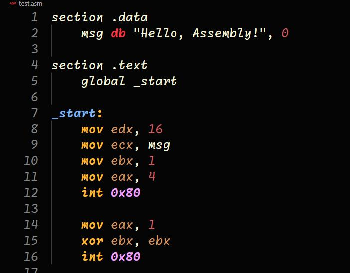

Un programma Assembly è composto da una serie di istruzioni che vengono eseguite dal processore. Ogni istruzione indica alla CPU quale operazione deve svolgere e su quali dati deve lavorare.
Generalmente, un'istruzione Assembly è composta da tre elementi principali:Nei programmi Assembly è possibile inserire dei commenti per spiegare il funzionamento delle istruzioni. I commenti non vengono eseguiti dal processore e servono solamente ad aiutare il programmatore a comprendere il codice. In questo modo il programma risulta più ordinato e facile da leggere.